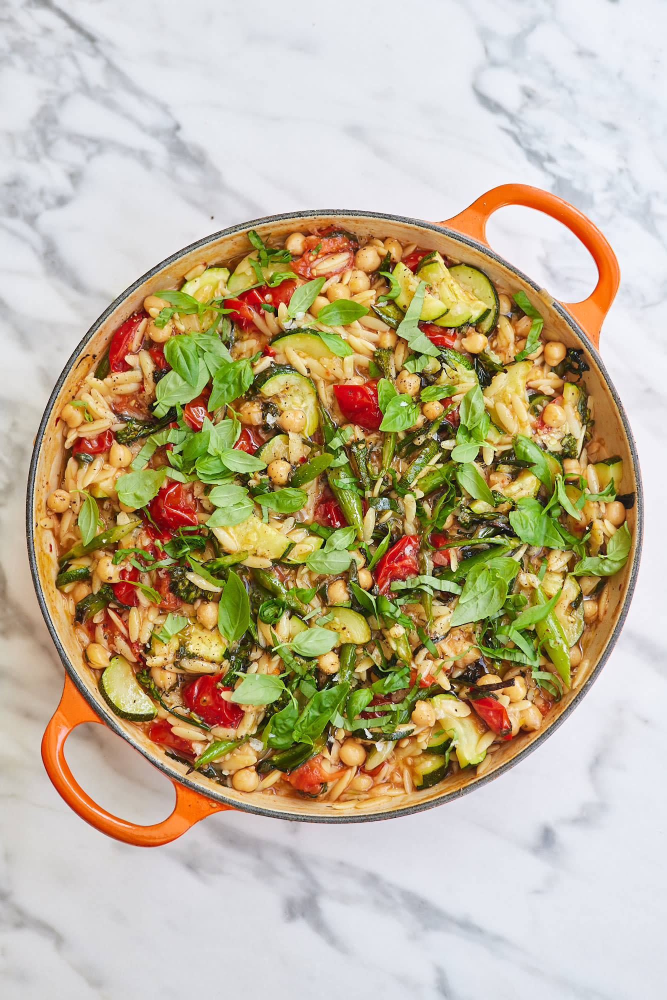

приготовление:
-
Почистить и мелко порезать 3 шт. лука-шалот, поставить разогреваться сковороду с оливковым маслом, положить лук обжариваться на среднем огоне. Почистить и мелко порезать 5 зубчиков чеснока, отправить к луку, тужа же ½ ч.л. хлопьев чили и готовить минут 15, пока они не станут прозрачно-золотистыми, периодически помешивая.
-
Берем кастрюлю с толстым дном, поставить разогреаться с оливковым маслом. Помыть и порезать мелкими кубиками 1 цукини (примерно 250 гр), положить на сковороду, добавить щепотку соли. Готовить на среднем огне, чтобы полу-тушились полу-обжаривались, пока жарится лук минут 10.
-
Помыть 500 гр помидоров черри, разрезать пополам, добавить к луку, увеличить огонь и обжарить все вместе минут 5.
-
Следующим шагом собираем все вместе: лук с помидорами добавить к цукини, туда же отправить 1 банку консервированного нута (400 гр, и слить жидкость), 150 гр орзо и 15-30 гр. базилика. Залить все это 500 мл. овощного бульона(я использую покупной и развожу кипятком), приправить солью и перцем, перемешать. Довести до кипения, убавить огонь и варить 8 минут (проверьте на упаковке время готовности орзо, может быть и 10 и даже 12 минут в зависимости от размера орзо), время от времени помешивать.